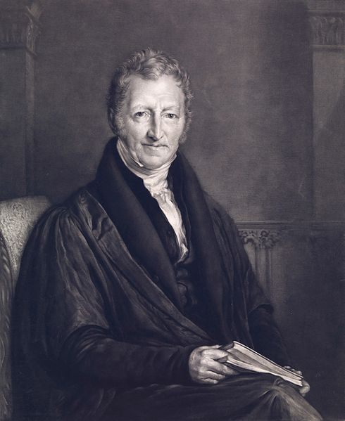
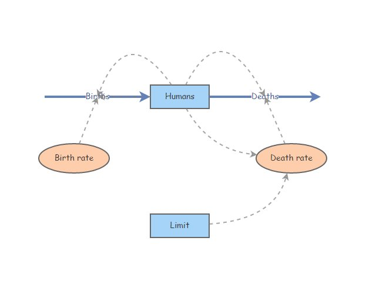

Malthus and the beginning of Pop Ecol
NRES 470/670
Spring 2021
Thomas Robert Malthus (1766 – 1834) was an English cleric who penned one of the most important and influential essays ever written: An Essay on the Principle of Population

The main point of this essay can be summed up by the following (a direct quote):
“The power of population is infinitely greater than the power in the earth to produce subsistence for man” - The Rev. Thomas Malthus
Or in a more verbose form…
“I think I may make fairly two postulata. First, that food is necessary to the existence of man. Secondly, that the passion between the sexes is necessary and will remain nearly in its present state … Assuming then my postulata as granted, I say, that the power of population is infinitely greater than the power in the earth to produce subsistence for man. Population, when unchecked, increases in a geometrical ratio. Subsistence increases only in an arithmetical ratio. A slight acquaintance with numbers will show the immensity of the first power in comparison of the second. By the law of our nature which makes food necessary to the life of man, the effects of these two unequal powers must be kept equal. This implies a strong and constantly operating check on population from the difficulty of subsistence. This difficulty must fall somewhere and must necessarily be severely felt by a large portion of mankind…”
And his argument can be summed up in this logical argument:
- That the increase of population is necessarily limited by the means of subsistence,
- That population does invariably increase when the means of subsistence increase, and,
- That the superior power of population is repressed by moral restraint, vice and misery
Is this an optimistic message or a pessimistic message?
“If they would rather die they had better do it, and decrease the surplus population” - Ebenezer Scrooge
Discussion Question: Was Malthus right? For humans? For wildlife? Can you think of any examples for or against?

Interestingly, in 1838 (four years after Malthus’ death), Charles Darwin, just back from his trip on HMS Beagle (1831–6), was searching for possible mechanisms to explain the origin of species. On reading Malthus’ Essay on the principle of population, he realized one of the possible implications of the checks that controlled population growth and wrote:
‘…favourable variations would tend to be preserved, and unfavourable ones to be destroyed … The result of this would be the formation of a new species. Here, then, I had at last got a theory by which to work.’ - Charles Darwin
Twenty one years later Darwin published his book On the origin of species by means of natural selection. It too raised a storm of controversy and protest.
So, what do you think? Mathus’ Essay was extremely influential, right!!
In-class exercise: limits to growth
Malthus was convinced that human population growth would overshoot the limit – that is, populations will grow until they run out of food. What’s the result? Starvation, suffering, disease! Let’s model this!
Here is the scenario we will model: if the population exceeds a certain limit, then a famine occurs and 95% of the population dies.
How can we do this in InsightMaker? You already know how to make an exponentially growing population! The new feature we will learn today is a very important programming construct: the conditional statement.
Conditional statements are also known as IF-THEN statements. In plain english: IF some condition is true, THEN do something. ELSE if some other condition is true, THEN do something else. ELSE if none of the previous conditions are true, THEN do something else.
In today’s in-class exercise, we will implement the following conditional statement (the “famine condition”): IF human population is below the population limit, THEN the annual death rate is 0.01. ELSE if the population exceeds the population limit, a famine arises and the mortality rate jumps to 0.99
To implement this in InsightMaker, we need to use the following syntax:
If [Humans]<[Limit] Then
0.01
Else
0.99
End IfPut together a basic exponential-growth model for a new [Stock] named Humans (or just clone and modify a basic exponential growth model with birth and death rate). This [Stock] should have two [Flows], one [Flow In] named Births and one [Flow Out] named Deaths. Both Births and Deaths should be defined as the product of Humans and per-capita rate constants, respectively called Birth rate and Death rate (each defined on the canvas as [Variables]). This model is identical to the one you made in lab last week.
Initialize the population of Humans to 1000. Set the Birth rate to 0.1 (humans produced per human per year). Set the Death rate to 0.01 (humans lost per human per year). Change the settings so that the simulation runs for 100 years.
Run this model, make sure it behaves like you would expect it to (yielding exponential growth!). How many humans are there after 100 years?
Now make a new [Stock] called Limit, representing the population limit for Humans. This could, for instance, represent the maximum number of humans that could be supported indefinitely if all arable land were cultivated with the most energy-rich crop possible. Initialize the “Limit” to half a million.
In preparation for implementing the “famine” condition (death rate increases to 99% if Humans exceeds Limit), create new Links from Humans to Death rate and from Limit to Death rate. Your canvas should look something like the image below:

- Now we can implement the “famine condition”! Open the equation editor window for Death rate (click on the equals sign) and type the following:
If [Humans]<[Limit] Then
0.01
Else
0.99
End IfYou don’t actually need to type this all in, you can just click on “Programming Functions” in the equation editor, and select “If-Then-Else” from the options. It is always better to use the built-in syntax generators, since that prevents you from making any unintended syntax errors (which can be difficult to de-bug!).
- Run the model and describe what happens.
Discussion Question is this population regulated?
CHALLENGE: Malthus said that “Population, when unchecked, increases in a geometrical ratio. Subsistence increases only in an arithmetical ratio.” By this he meant that populations grow exponentially, whereas the population limits (food production capacity) grows linearly.
What happens if the limit were allowed to increase arithmetically? Try to implement this in InsightMaker. That is, can you change the model so that the population limit increases linearly- say, by 1000 per year? What happens then? HINT: you can add a [Flow] to represent increase in agricultural production!
Q Can you adjust the parameters to make this simulated human population sustainable? Why? Why not? [TopHat]
Just for fun, here is a Video made by John Green about Malthus and world history!
… And here’s another video about the influential 1972 book, “Limits to Growth”, which made the argument that growth is not sustainable- the earth has limits! Does this argument sound familiar? Interestingly, the “World3” Insightmaker model that some of you may have pulled up on our first week of class is the basis for the dire predictions in the “Limits to Growth” book!